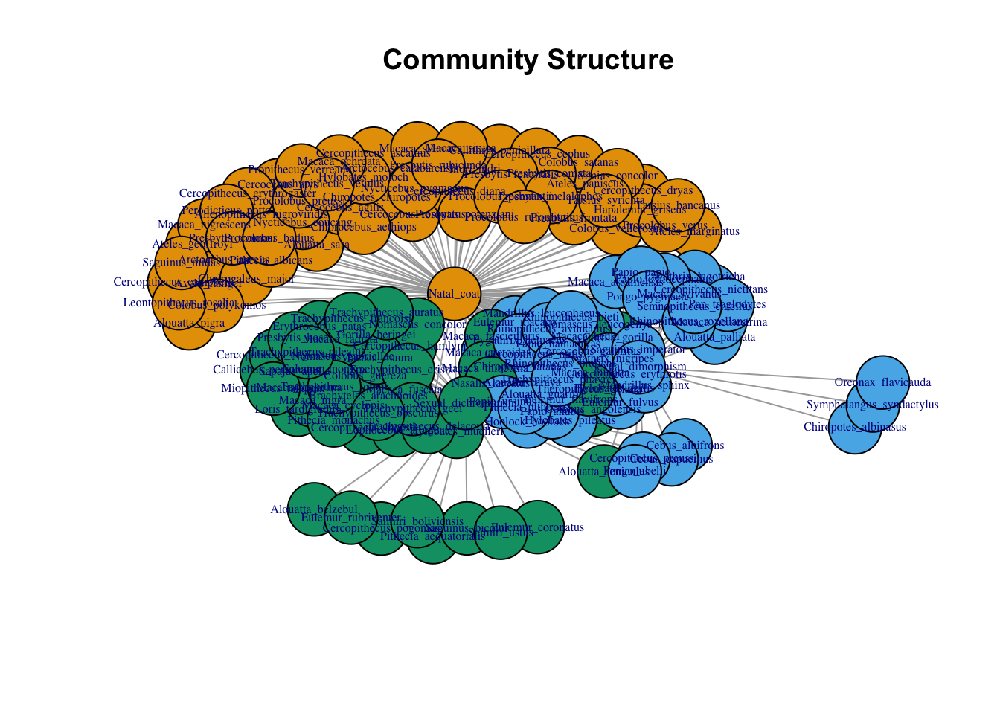
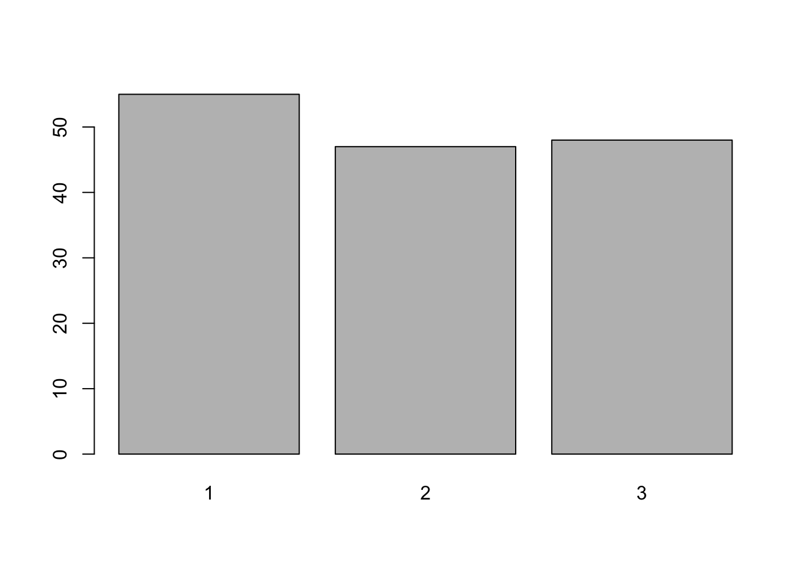
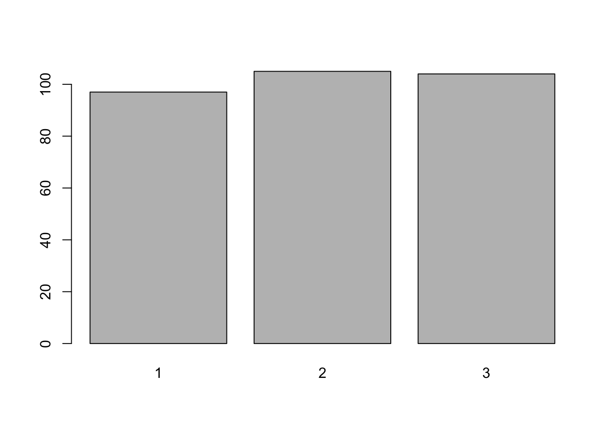
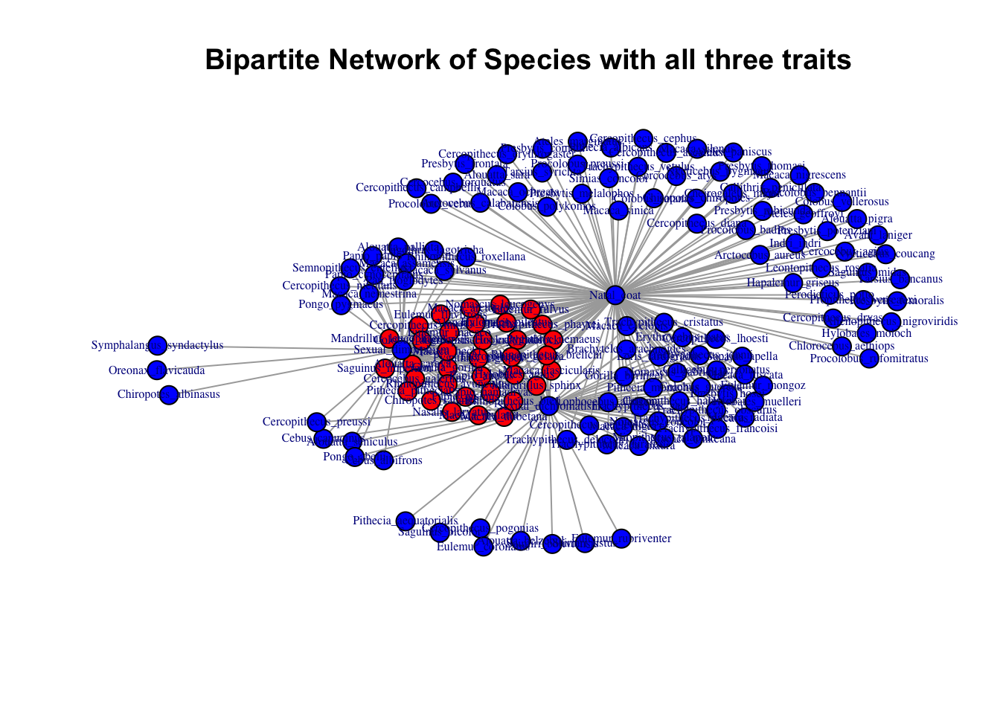

logical_analysis
Sarah E Taylor
2024-02-13
Last updated: 2024-02-26
Checks: 7 0
Knit directory: LocksofLineage/
This reproducible R Markdown analysis was created with workflowr (version 1.7.1). The Checks tab describes the reproducibility checks that were applied when the results were created. The Past versions tab lists the development history.
Great! Since the R Markdown file has been committed to the Git repository, you know the exact version of the code that produced these results.
Great job! The global environment was empty. Objects defined in the global environment can affect the analysis in your R Markdown file in unknown ways. For reproduciblity it’s best to always run the code in an empty environment.
The command set.seed(20231117) was run prior to running
the code in the R Markdown file. Setting a seed ensures that any results
that rely on randomness, e.g. subsampling or permutations, are
reproducible.
Great job! Recording the operating system, R version, and package versions is critical for reproducibility.
Nice! There were no cached chunks for this analysis, so you can be confident that you successfully produced the results during this run.
Great job! Using relative paths to the files within your workflowr project makes it easier to run your code on other machines.
Great! You are using Git for version control. Tracking code development and connecting the code version to the results is critical for reproducibility.
The results in this page were generated with repository version 61dc047. See the Past versions tab to see a history of the changes made to the R Markdown and HTML files.
Note that you need to be careful to ensure that all relevant files for
the analysis have been committed to Git prior to generating the results
(you can use wflow_publish or
wflow_git_commit). workflowr only checks the R Markdown
file, but you know if there are other scripts or data files that it
depends on. Below is the status of the Git repository when the results
were generated:
Ignored files:
Ignored: .DS_Store
Ignored: .Rhistory
Ignored: .Rproj.user/
Ignored: data/.DS_Store
Untracked files:
Untracked: data/Phylo_Project_Data/Full_Hair_Traits_Updated_Names.csv
Untracked: output/Data_That_Works.csv
Untracked: output/colored_tree_plot.pdf
Untracked: output/colored_tree_plot.png
Untracked: output/combined_legends.csv
Untracked: output/data_binarized_Feb13.csv
Untracked: output/data_pruned.csv
Untracked: output/pruned_speciesnames.csv
Untracked: output/pruned_tree.txt
Untracked: output/pruned_tree_Jan23.pdf
Untracked: output/pruned_tree_Jan23.png
Unstaged changes:
Deleted: analysis/BasicPipeline.Rmd
Deleted: analysis/ConBDichromatism.Rmd
Deleted: analysis/ConDDichromatism.Rmd
Deleted: analysis/ConMDichromatism.Rmd
Deleted: analysis/DichromFromDimorph.Rmd
Deleted: analysis/DimorphFromDichrom.Rmd
Deleted: analysis/DimorphismFromNatalCoat.Rmd
Deleted: analysis/Dimorphism_on_the_Head.Rmd
Deleted: analysis/HeadDichromatism.Rmd
Deleted: analysis/HeadDimorphism.Rmd
Deleted: analysis/JoinTreeDataTest.Rmd
Deleted: analysis/SizeDichromatism.Rmd
Deleted: analysis/SizeHairDimorphism.Rmd
Deleted: analysis/binarized_logistic_regression.Rmd
Deleted: analysis/binarized_phylogenetic_logistic_regression_function.R
Deleted: analysis/expanded_trait_data.Rmd
Deleted: analysis/logistic_regression_function_script.Rmd
Deleted: analysis/phylogenetic_logistic_regression_function.R
Deleted: analysis/run_phylogenetic_logistic_regression_with_prereq.R
Deleted: analysis/trait_matrix.Rmd
Deleted: analysis/tree_trait_plot.Rmd
Deleted: colored_tree_plot.pdf
Deleted: colored_tree_plot.png
Deleted: combined_legends.csv
Deleted: data/Full_Hair_Traits_Updated_Names.csv
Modified: data/Phylo_Project_Data/Data_That_Works.csv
Modified: data/Phylo_Project_Data/Masters_Binary_Traits.csv
Deleted: data/Phylo_Project_Data/Phylo_Questions_Matrix .csv
Deleted: data/Phylo_Project_Data/Primates_Mammals.docx
Deleted: data/Phylo_Project_Data/primates_masters.csv
Modified: data/README.md
Deleted: data/combined_legends.csv
Deleted: data/data_binarized_Feb13.csv
Deleted: data/data_multiple_multiple.csv
Deleted: data/data_pruned.csv
Modified: data/data_to_use.csv
Deleted: data/pruned_speciesnames.csv
Deleted: data/pruned_tree.txt
Modified: output/data_traits_expanded_columns.csv
Deleted: pruned_tree_Jan23.pdf
Deleted: pruned_tree_Jan23.png
Note that any generated files, e.g. HTML, png, CSS, etc., are not included in this status report because it is ok for generated content to have uncommitted changes.
These are the previous versions of the repository in which changes were
made to the R Markdown (analysis/logical_analysis.Rmd) and
HTML (docs/logical_analysis.html) files. If you’ve
configured a remote Git repository (see ?wflow_git_remote),
click on the hyperlinks in the table below to view the files as they
were in that past version.
| File | Version | Author | Date | Message |
|---|---|---|---|---|
| Rmd | 61dc047 | Sarah E Taylor | 2024-02-26 | Removed unnecessary files and redid the analysis. |
| Rmd | 915109e | Sarah E Taylor | 2024-02-15 | Figuring out how to do the regression so I get what I got before. |
| html | 915109e | Sarah E Taylor | 2024-02-15 | Figuring out how to do the regression so I get what I got before. |
Load the Data
#Library to read in the data file
library(readr)
#Library to run the phylogenetic analyses
library(ape)
#Library to clean and organize the data
library(tidyverse)── Attaching core tidyverse packages ──────────────────────── tidyverse 2.0.0 ──
✔ dplyr 1.1.0 ✔ purrr 1.0.1
✔ forcats 1.0.0 ✔ stringr 1.5.0
✔ ggplot2 3.4.4 ✔ tibble 3.1.8
✔ lubridate 1.9.2 ✔ tidyr 1.3.0
── Conflicts ────────────────────────────────────────── tidyverse_conflicts() ──
✖ dplyr::filter() masks stats::filter()
✖ dplyr::lag() masks stats::lag()
✖ dplyr::where() masks ape::where()
ℹ Use the conflicted package (<http://conflicted.r-lib.org/>) to force all conflicts to become errors#Library to run the phylogenetic regressions
library(phylolm)
#Libary to plot the trees
library(ggtree)Warning: package 'ggtree' was built under R version 4.2.2ggtree v3.6.2 For help: https://yulab-smu.top/treedata-book/
If you use the ggtree package suite in published research, please cite
the appropriate paper(s):
Guangchuang Yu, David Smith, Huachen Zhu, Yi Guan, Tommy Tsan-Yuk Lam.
ggtree: an R package for visualization and annotation of phylogenetic
trees with their covariates and other associated data. Methods in
Ecology and Evolution. 2017, 8(1):28-36. doi:10.1111/2041-210X.12628
Guangchuang Yu. Data Integration, Manipulation and Visualization of
Phylogenetic Trees (1st edition). Chapman and Hall/CRC. 2022,
doi:10.1201/9781003279242
S Xu, Z Dai, P Guo, X Fu, S Liu, L Zhou, W Tang, T Feng, M Chen, L
Zhan, T Wu, E Hu, Y Jiang, X Bo, G Yu. ggtreeExtra: Compact
visualization of richly annotated phylogenetic data. Molecular Biology
and Evolution. 2021, 38(9):4039-4042. doi: 10.1093/molbev/msab166
Attaching package: 'ggtree'
The following object is masked from 'package:tidyr':
expand
The following object is masked from 'package:ape':
rotate# Make sure that the NAs are explicit
data_to_use <- read_csv("data/data_to_use.csv", na = "NA")Rows: 238 Columns: 18
── Column specification ────────────────────────────────────────────────────────
Delimiter: ","
chr (16): family, Genus, species, subspecies, Sexual_dimorphism, Sexual_Dimo...
dbl (1): Size_Dimorphism
lgl (1): ...7
ℹ Use `spec()` to retrieve the full column specification for this data.
ℹ Specify the column types or set `show_col_types = FALSE` to quiet this message.Clean the Data
data_traits = select(data_to_use, -4,-6,-7,-12,-17)
# Column 4 is the subspecies, the data is separated based on species, so the subspecies do not add information needed for the analysis
# Column 6 was the description of sexual dimorphism from the sources
# Column 7 was a blank column to make it easier to view the description in excel
# Column 11 was the description of natal coats from the sources
# Column 17 was the description of sexual dichromatism from the sources# Binarize the data
data_traits <- data_traits %>%
mutate(across(c(Sexual_dimorphism, Natal_coat, Sexual_dichromatism), ~if_else(. == "Yes", 1, 0)))#Add a column for each occurrence of sexual dichromatism at a different body part, if one species has multiple values (body parts) they will be counted in each column that they occur ie head,flank is 1 for head and 1 for flank
data_traits <- data_traits %>%
mutate(DC_Body = case_when(
grepl("Body", Where) ~ 1,
!is.na(Where) ~ 0,
TRUE ~ as.integer(NA)),
DC_Head = case_when(
grepl("Head", Where) ~ 1,
!is.na(Where) ~ 0,
TRUE ~ as.integer(NA)),
DC_Multiple = case_when(
grepl("Multiple", Where) ~ 1,
!is.na(Where) ~ 0,
TRUE ~ as.integer(NA)),
DC_Cape = case_when(
grepl("Cape", Where) ~ 1,
!is.na(Where) ~ 0,
TRUE ~ as.integer(NA)),
DC_Pubis = case_when(
grepl("Pubis", Where) ~ 1,
!is.na(Where) ~ 0,
TRUE ~ as.integer(NA)),
DC_Tail = case_when(
grepl("Tail", Where) ~ 1,
!is.na(Where) ~ 0,
TRUE ~ as.integer(NA)))data_traits <- data_traits %>%
mutate(
DM_Head = case_when(
grepl("Head", Location) ~ 1,
!is.na(Location) ~ 0,
TRUE ~ as.integer(NA)
),
DM_Body = case_when(
grepl("Body", Location) ~ 1,
!is.na(Location) ~ 0,
TRUE ~ as.integer(NA)
),
DM_Pubis = case_when(
grepl("Pubis", Location) ~ 1,
!is.na(Location) ~ 0,
TRUE ~ as.integer(NA)
),
DM_Tail = case_when(
grepl("Tail", Location) ~ 1,
!is.na(Location) ~ 0,
TRUE ~ as.integer(NA)
),
DM_Cape = case_when(
grepl("Cape", Location) ~ 1,
!is.na(Location) ~ 0,
TRUE ~ as.integer(NA)
),
DM_Mane = case_when(
grepl("Mane", Location) ~ 1,
!is.na(Location) ~ 0,
TRUE ~ as.integer(NA)
),
DM_Multiple = case_when(
grepl("Multiple", Location) ~ 1,
#grepl(",", Location) , Add with | if wanting to split commas to indicates multiple locations
!is.na(Location) ~ 0,
TRUE ~ as.integer(NA)
),
DM_All = case_when(
grepl("All", Location) ~ 1,
!is.na(Location) ~ 0,
TRUE ~ as.integer(NA)
)
)data_traits <- data_traits %>%
mutate(DM_Male_Growth = case_when(
grepl("M", Direction) ~ 1,
!is.na(Direction) ~ 0,
TRUE ~ as.integer(NA)),
DM_Female_Growth = case_when(
grepl("F", Direction) ~ 1,
!is.na(Direction) ~ 0,
TRUE ~ as.integer(NA)),
DM_Both = case_when(
grepl("Both", Direction) ~ 1,
!is.na(Direction) ~ 0,
TRUE ~ as.integer(NA)),
)data_traits <- data_traits %>%
mutate(DC_Male_Darker = case_when(
grepl("M", Darker) ~ 1,
!is.na(Darker) ~ 0,
TRUE ~ as.integer(NA)),
DC_Female_Darker = case_when(
grepl("F", Darker) ~ 1,
!is.na(Darker) ~ 0,
TRUE ~ as.integer(NA)),
DC_Varies = case_when(
grepl("Varies", Darker) ~ 1,
!is.na(Darker) ~ 0,
TRUE ~ as.integer(NA)),
)data_traits <- data_traits %>%
mutate(NC_incon = case_when(
grepl("incon", Natal_Coat_Type) ~ 1,
!is.na(Natal_Coat_Type) ~ 0,
TRUE ~ as.integer(NA)),
NC_con_mom = case_when(
grepl("con to mom", Natal_Coat_Type) ~ 1,
!is.na(Natal_Coat_Type) ~ 0,
TRUE ~ as.integer(NA)),
NC_con_dad = case_when(
grepl("Con to dad", Natal_Coat_Type) ~ 1,
!is.na(Natal_Coat_Type) ~ 0,
TRUE ~ as.integer(NA)),
NC_con_both = case_when(
grepl("con to both", Natal_Coat_Type) ~ 1,
!is.na(Natal_Coat_Type) ~ 0,
TRUE ~ as.integer(NA))
)
# Add a column with all conspicuous natal coats as 1 and inconspicuous as 0
data_traits <- data_traits %>%
mutate(conspicuous_coat = case_when(
Natal_Coat_Type == "incon" ~ 0,
Natal_Coat_Type != "incon" & !is.na(Natal_Coat_Type) ~ 1,
TRUE ~ as.integer(NA)
))
#Natal coats can be inconspicuous (close in color to parents) or conspicuous (obviously a different color). When they are conspicuous they can be contrasting to either the mothers coats or the fathers or both. data_traits <- data_traits %>%
mutate(DC_Complete = case_when(
grepl("Complete", Sexual_dichromatism_type) ~ 1,
!is.na(Sexual_dichromatism_type) ~ 0,
TRUE ~ as.integer(NA)),
DC_Partial = case_when(
grepl("Partial", Sexual_dichromatism_type) ~ 1,
!is.na(Sexual_dichromatism_type) ~ 0,
TRUE ~ as.integer(NA))
)data_traits <- data_traits %>%
mutate(conspicuous_coat = case_when(
Natal_Coat_Type == "incon" ~ 0, Natal_Coat_Type != "incon" & !is.na(Natal_Coat_Type) ~ 1,
TRUE ~ as.integer(NA)
))write_csv(data_traits, "data/Phylo_Project_Data/Data_That_Works.csv")Running the Analyses
Phylogenetic tree: mammaltree
Number of tips: 5987
Number of nodes: 5986
Branch lengths:
mean: 2.680715
variance: 24.17565
distribution summary:
Min. 1st Qu. Median 3rd Qu. Max.
0.0000000 0.5284341 1.3073255 2.9454665 106.6007500
No root edge.
First ten tip labels: X_Shuotherium
X_Pseudotribos
X_Asfaltomylos
X_Obdurodon
Zaglossus_bartoni
Zaglossus_bruijnii
Zaglossus_attenboroughi
Tachyglossus_aculeatus
Ornithorhynchus_anatinus
X_Teinolophos
No node labels.#read in the data
Binary_traits <- read_csv("data/Phylo_Project_Data/Data_That_Works.csv")Rows: 238 Columns: 40
── Column specification ────────────────────────────────────────────────────────
Delimiter: ","
chr (9): family, Genus, species, Location, Direction, Natal_Coat_Type, Sexu...
dbl (31): Sexual_dimorphism, Natal_coat, Sexual_dichromatism, Size_Dimorphis...
ℹ Use `spec()` to retrieve the full column specification for this data.
ℹ Specify the column types or set `show_col_types = FALSE` to quiet this message.head(Binary_traits)# A tibble: 6 × 40
family Genus species Sexua…¹ Locat…² Direc…³ Natal…⁴ Natal…⁵ Sexua…⁶ Sexua…⁷
<chr> <chr> <chr> <dbl> <chr> <chr> <dbl> <chr> <dbl> <chr>
1 cercopi… alle… nigrov… 0 <NA> <NA> 1 incon 0 <NA>
2 cheirog… allo… tricho… 0 <NA> <NA> 0 <NA> 0 <NA>
3 cebidae alou… belzeb… 0 <NA> <NA> 0 <NA> 1 Partial
4 cebidae alou… caraya 1 Head M 1 Con to… 1 Comple…
5 cebidae alou… guariba 1 Head M 1 incon 1 Comple…
6 cebidae alou… pallia… 1 Head, … F 1 incon 0 <NA>
# … with 30 more variables: Where <chr>, Darker <chr>, Size_Dimorphism <dbl>,
# DC_Body <dbl>, DC_Head <dbl>, DC_Multiple <dbl>, DC_Cape <dbl>,
# DC_Pubis <dbl>, DC_Tail <dbl>, DM_Head <dbl>, DM_Body <dbl>,
# DM_Pubis <dbl>, DM_Tail <dbl>, DM_Cape <dbl>, DM_Mane <dbl>,
# DM_Multiple <dbl>, DM_All <dbl>, DM_Male_Growth <dbl>,
# DM_Female_Growth <dbl>, DM_Both <dbl>, DC_Male_Darker <dbl>,
# DC_Female_Darker <dbl>, DC_Varies <dbl>, NC_incon <dbl>, …Format Data
#combine genus and species names and capitalize first letter
Binary_traits_combined = Binary_traits %>% unite("species",`Genus`, `species`) %>% mutate(species = str_to_title(species))
head(Binary_traits_combined)# A tibble: 6 × 39
family species Sexua…¹ Locat…² Direc…³ Natal…⁴ Natal…⁵ Sexua…⁶ Sexua…⁷ Where
<chr> <chr> <dbl> <chr> <chr> <dbl> <chr> <dbl> <chr> <chr>
1 cercopi… Alleno… 0 <NA> <NA> 1 incon 0 <NA> <NA>
2 cheirog… Alloce… 0 <NA> <NA> 0 <NA> 0 <NA> <NA>
3 cebidae Alouat… 0 <NA> <NA> 0 <NA> 1 Partial Body
4 cebidae Alouat… 1 Head M 1 Con to… 1 Comple… <NA>
5 cebidae Alouat… 1 Head M 1 incon 1 Comple… <NA>
6 cebidae Alouat… 1 Head, … F 1 incon 0 <NA> <NA>
# … with 29 more variables: Darker <chr>, Size_Dimorphism <dbl>, DC_Body <dbl>,
# DC_Head <dbl>, DC_Multiple <dbl>, DC_Cape <dbl>, DC_Pubis <dbl>,
# DC_Tail <dbl>, DM_Head <dbl>, DM_Body <dbl>, DM_Pubis <dbl>, DM_Tail <dbl>,
# DM_Cape <dbl>, DM_Mane <dbl>, DM_Multiple <dbl>, DM_All <dbl>,
# DM_Male_Growth <dbl>, DM_Female_Growth <dbl>, DM_Both <dbl>,
# DC_Male_Darker <dbl>, DC_Female_Darker <dbl>, DC_Varies <dbl>,
# NC_incon <dbl>, NC_con_mom <dbl>, NC_con_dad <dbl>, NC_con_both <dbl>, …# prune tree for species in data
species_not_in_tree=setdiff(mammaltree$tip.label, Binary_traits_combined$species)
pruned.tree<-drop.tip(mammaltree,species_not_in_tree)
summary(pruned.tree)
Phylogenetic tree: pruned.tree
Number of tips: 235
Number of nodes: 234
Branch lengths:
mean: 2.864158
variance: 17.90887
distribution summary:
Min. 1st Qu. Median 3rd Qu. Max.
0.04705822 0.88148065 1.69536613 3.05008500 49.61463191
No root edge.
First ten tip labels: Nycticebus_pygmaeus
Nycticebus_coucang
Loris_tardigradus
Galagoides_thomasi
Galago_matschiei
Galago_moholi
Galago_senegalensis
Galago_gallarum
Otolemur_garnettii
Otolemur_crassicaudatus
No node labels.#prune data for species in tree
data_pruned <- Binary_traits_combined %>% filter(species %in% pruned.tree$tip.label)
head(data_pruned)# A tibble: 6 × 39
family species Sexua…¹ Locat…² Direc…³ Natal…⁴ Natal…⁵ Sexua…⁶ Sexua…⁷ Where
<chr> <chr> <dbl> <chr> <chr> <dbl> <chr> <dbl> <chr> <chr>
1 cercopi… Alleno… 0 <NA> <NA> 1 incon 0 <NA> <NA>
2 cheirog… Alloce… 0 <NA> <NA> 0 <NA> 0 <NA> <NA>
3 cebidae Alouat… 0 <NA> <NA> 0 <NA> 1 Partial Body
4 cebidae Alouat… 1 Head M 1 Con to… 1 Comple… <NA>
5 cebidae Alouat… 1 Head M 1 incon 1 Comple… <NA>
6 cebidae Alouat… 1 Head, … F 1 incon 0 <NA> <NA>
# … with 29 more variables: Darker <chr>, Size_Dimorphism <dbl>, DC_Body <dbl>,
# DC_Head <dbl>, DC_Multiple <dbl>, DC_Cape <dbl>, DC_Pubis <dbl>,
# DC_Tail <dbl>, DM_Head <dbl>, DM_Body <dbl>, DM_Pubis <dbl>, DM_Tail <dbl>,
# DM_Cape <dbl>, DM_Mane <dbl>, DM_Multiple <dbl>, DM_All <dbl>,
# DM_Male_Growth <dbl>, DM_Female_Growth <dbl>, DM_Both <dbl>,
# DC_Male_Darker <dbl>, DC_Female_Darker <dbl>, DC_Varies <dbl>,
# NC_incon <dbl>, NC_con_mom <dbl>, NC_con_dad <dbl>, NC_con_both <dbl>, …#put data into useful form for phylolm
colnames(data_pruned) = gsub(" ", "_", colnames(data_pruned))
data_pruned_rownames = column_to_rownames(data_pruned, var = "species")
head(data_pruned_rownames) family Sexual_dimorphism Location
Allenopithecus_nigroviridis cercopithecidae 0 <NA>
Allocebus_trichotis cheirogaleidae 0 <NA>
Alouatta_belzebul cebidae 0 <NA>
Alouatta_caraya cebidae 1 Head
Alouatta_guariba cebidae 1 Head
Alouatta_palliata cebidae 1 Head, Flank
Direction Natal_coat Natal_Coat_Type
Allenopithecus_nigroviridis <NA> 1 incon
Allocebus_trichotis <NA> 0 <NA>
Alouatta_belzebul <NA> 0 <NA>
Alouatta_caraya M 1 Con to dad
Alouatta_guariba M 1 incon
Alouatta_palliata F 1 incon
Sexual_dichromatism Sexual_dichromatism_type Where
Allenopithecus_nigroviridis 0 <NA> <NA>
Allocebus_trichotis 0 <NA> <NA>
Alouatta_belzebul 1 Partial Body
Alouatta_caraya 1 Complete <NA>
Alouatta_guariba 1 Complete <NA>
Alouatta_palliata 0 <NA> <NA>
Darker Size_Dimorphism DC_Body DC_Head DC_Multiple
Allenopithecus_nigroviridis <NA> 1 NA NA NA
Allocebus_trichotis <NA> 1 NA NA NA
Alouatta_belzebul M 1 1 0 0
Alouatta_caraya M 1 NA NA NA
Alouatta_guariba M 1 NA NA NA
Alouatta_palliata <NA> 1 NA NA NA
DC_Cape DC_Pubis DC_Tail DM_Head DM_Body DM_Pubis
Allenopithecus_nigroviridis NA NA NA NA NA NA
Allocebus_trichotis NA NA NA NA NA NA
Alouatta_belzebul 0 0 0 NA NA NA
Alouatta_caraya NA NA NA 1 0 0
Alouatta_guariba NA NA NA 1 0 0
Alouatta_palliata NA NA NA 1 0 0
DM_Tail DM_Cape DM_Mane DM_Multiple DM_All
Allenopithecus_nigroviridis NA NA NA NA NA
Allocebus_trichotis NA NA NA NA NA
Alouatta_belzebul NA NA NA NA NA
Alouatta_caraya 0 0 0 0 0
Alouatta_guariba 0 0 0 0 0
Alouatta_palliata 0 0 0 0 0
DM_Male_Growth DM_Female_Growth DM_Both
Allenopithecus_nigroviridis NA NA NA
Allocebus_trichotis NA NA NA
Alouatta_belzebul NA NA NA
Alouatta_caraya 1 0 0
Alouatta_guariba 1 0 0
Alouatta_palliata 0 1 0
DC_Male_Darker DC_Female_Darker DC_Varies NC_incon
Allenopithecus_nigroviridis NA NA NA 1
Allocebus_trichotis NA NA NA NA
Alouatta_belzebul 1 0 0 NA
Alouatta_caraya 1 0 0 0
Alouatta_guariba 1 0 0 1
Alouatta_palliata NA NA NA 1
NC_con_mom NC_con_dad NC_con_both conspicuous_coat
Allenopithecus_nigroviridis 0 0 0 0
Allocebus_trichotis NA NA NA NA
Alouatta_belzebul NA NA NA NA
Alouatta_caraya 0 1 0 1
Alouatta_guariba 0 0 0 0
Alouatta_palliata 0 0 0 0
DC_Complete DC_Partial
Allenopithecus_nigroviridis NA NA
Allocebus_trichotis NA NA
Alouatta_belzebul 0 1
Alouatta_caraya 1 0
Alouatta_guariba 1 0
Alouatta_palliata NA NAPart 1: Logistic Regressions on Presence/Absence of Traits
Question 1: Do Natal Coats predict adult Sexual Dimorphism?
Predictor: Natal Coats Outcome: Sexual Dichromatism Regression, YES
# run phylolm and get summary
SDCfromNC <- phyloglm(Sexual_dichromatism ~ Natal_coat, data_pruned_rownames, phy = pruned.tree,method="logistic_MPLE")
summary(SDCfromNC)
Call:
phyloglm(formula = Sexual_dichromatism ~ Natal_coat, data = data_pruned_rownames,
phy = pruned.tree, method = "logistic_MPLE")
AIC logLik Pen.logLik
262.1 -128.0 -125.4
Method: logistic_MPLE
Mean tip height: 66.17414
Parameter estimate(s):
alpha: 0.2587127
Coefficients:
Estimate StdErr z.value p.value
(Intercept) -1.86372 0.31749 -5.8702 4.352e-09 ***
Natal_coat 1.75499 0.36201 4.8480 1.247e-06 ***
---
Signif. codes: 0 '***' 0.001 '**' 0.01 '*' 0.05 '.' 0.1 ' ' 1
Note: Wald-type p-values for coefficients, conditional on alpha=0.2587127Predictor: Natal Coats Outcome: Sexual Hair Dimorphism Regression, YES
# run phylolm and get summary
SDMfromNC <- phyloglm(Sexual_dimorphism ~ Natal_coat, data_pruned_rownames, phy = pruned.tree,method="logistic_MPLE")
summary(SDMfromNC)
Call:
phyloglm(formula = Sexual_dimorphism ~ Natal_coat, data = data_pruned_rownames,
phy = pruned.tree, method = "logistic_MPLE")
AIC logLik Pen.logLik
223.5 -108.7 -106.3
Method: logistic_MPLE
Mean tip height: 66.17414
Parameter estimate(s):
alpha: 0.2494233
Coefficients:
Estimate StdErr z.value p.value
(Intercept) -2.22721 0.36955 -6.0268 1.673e-09 ***
Natal_coat 1.50026 0.40871 3.6707 0.0002419 ***
---
Signif. codes: 0 '***' 0.001 '**' 0.01 '*' 0.05 '.' 0.1 ' ' 1
Note: Wald-type p-values for coefficients, conditional on alpha=0.2494233Predictor: Natal Coats Outcome: Size Dimorphism Regression, NO
# run phylolm and get summary
SzDfromNC <- phyloglm(Size_Dimorphism ~ Natal_coat, data_pruned_rownames, phy = pruned.tree,method="logistic_MPLE")
summary(SzDfromNC)
Call:
phyloglm(formula = Size_Dimorphism ~ Natal_coat, data = data_pruned_rownames,
phy = pruned.tree, method = "logistic_MPLE")
AIC logLik Pen.logLik
292.5 -143.3 -140.5
Method: logistic_MPLE
Mean tip height: 66.17414
Parameter estimate(s):
alpha: 0.1744491
Coefficients:
Estimate StdErr z.value p.value
(Intercept) -0.13740 0.24825 -0.5535 0.5800
Natal_coat 0.66537 0.29117 2.2852 0.0223 *
---
Signif. codes: 0 '***' 0.001 '**' 0.01 '*' 0.05 '.' 0.1 ' ' 1
Note: Wald-type p-values for coefficients, conditional on alpha=0.1744491Question 2: Does adult Sexual Dimorphism predict Natal Coats?
Predictor: Sexual Dichromatism Outcome: Natal Coats Regression, YES
# run phylolm and get summary
NCfromSDC <- phyloglm( Natal_coat ~ Sexual_dichromatism, data_pruned_rownames, phy = pruned.tree,method="logistic_MPLE")
summary(NCfromSDC)
Call:
phyloglm(formula = Natal_coat ~ Sexual_dichromatism, data = data_pruned_rownames,
phy = pruned.tree, method = "logistic_MPLE")
AIC logLik Pen.logLik
239.4 -116.7 -114.4
Method: logistic_MPLE
Mean tip height: 66.17414
Parameter estimate(s):
alpha: 0.06237646
Coefficients:
Estimate StdErr z.value p.value
(Intercept) -0.27153 0.36814 -0.7376 0.4608
Sexual_dichromatism 1.24616 0.28087 4.4368 9.131e-06 ***
---
Signif. codes: 0 '***' 0.001 '**' 0.01 '*' 0.05 '.' 0.1 ' ' 1
Note: Wald-type p-values for coefficients, conditional on alpha=0.06237646Predictor: Sexual Hair Dimorphism Outcome: Natal Coats Regression, YES
# run phylolm and get summary
NCfromSDM <- phyloglm(Natal_coat ~ Sexual_dimorphism, data_pruned_rownames, phy = pruned.tree,method="logistic_MPLE")
summary(NCfromSDM)
Call:
phyloglm(formula = Natal_coat ~ Sexual_dimorphism, data = data_pruned_rownames,
phy = pruned.tree, method = "logistic_MPLE")
AIC logLik Pen.logLik
248.6 -121.3 -119.0
Method: logistic_MPLE
Mean tip height: 66.17414
Parameter estimate(s):
alpha: 0.08017307
Coefficients:
Estimate StdErr z.value p.value
(Intercept) -0.20718 0.32843 -0.6308 0.5281445
Sexual_dimorphism 1.25189 0.32802 3.8166 0.0001353 ***
---
Signif. codes: 0 '***' 0.001 '**' 0.01 '*' 0.05 '.' 0.1 ' ' 1
Note: Wald-type p-values for coefficients, conditional on alpha=0.08017307Predictor: Sexual Hair Dimorphism + Sexual Dichromatism Outcome: Natal Coats Regression, YES
# run phylolm and get summary
NCfromSDM_DC <- phyloglm(Natal_coat ~ Sexual_dimorphism + Sexual_dichromatism, data_pruned_rownames, phy = pruned.tree,method="logistic_MPLE")
summary(NCfromSDM_DC)
Call:
phyloglm(formula = Natal_coat ~ Sexual_dimorphism + Sexual_dichromatism,
data = data_pruned_rownames, phy = pruned.tree, method = "logistic_MPLE")
AIC logLik Pen.logLik
240.4 -116.2 -112.8
Method: logistic_MPLE
Mean tip height: 66.17414
Parameter estimate(s):
alpha: 0.0692272
Coefficients:
Estimate StdErr z.value p.value
(Intercept) -0.27586 0.34003 -0.8113 0.4172057
Sexual_dimorphism 0.83592 0.35338 2.3655 0.0180048 *
Sexual_dichromatism 0.97548 0.29412 3.3166 0.0009111 ***
---
Signif. codes: 0 '***' 0.001 '**' 0.01 '*' 0.05 '.' 0.1 ' ' 1
Note: Wald-type p-values for coefficients, conditional on alpha=0.0692272Question 3: Does the presence of one sexually dimorphic trait predict another?
Predictor: Sexual Hair Dimorphism Outcome: Sexual Dichromatism Regression, YES
# run phylolm and get summary
DCfromSDM <- phyloglm(Sexual_dichromatism ~ Sexual_dimorphism, data_pruned_rownames, phy = pruned.tree,method="logistic_MPLE")
summary(DCfromSDM)
Call:
phyloglm(formula = Sexual_dichromatism ~ Sexual_dimorphism, data = data_pruned_rownames,
phy = pruned.tree, method = "logistic_MPLE")
AIC logLik Pen.logLik
250.2 -122.1 -119.6
Method: logistic_MPLE
Mean tip height: 66.17414
Parameter estimate(s):
alpha: 0.1839146
Coefficients:
Estimate StdErr z.value p.value
(Intercept) -1.48223 0.26062 -5.6872 1.291e-08 ***
Sexual_dimorphism 2.15919 0.35660 6.0550 1.404e-09 ***
---
Signif. codes: 0 '***' 0.001 '**' 0.01 '*' 0.05 '.' 0.1 ' ' 1
Note: Wald-type p-values for coefficients, conditional on alpha=0.1839146Predictor: Sexual Dichromatism Outcome: Sexual Hair Dimorphism Regression, YES
# run phylolm and get summary
SDMfromDC <- phyloglm(Sexual_dimorphism ~ Sexual_dichromatism, data_pruned_rownames, phy = pruned.tree,method="logistic_MPLE")
summary(SDMfromDC)
Call:
phyloglm(formula = Sexual_dimorphism ~ Sexual_dichromatism, data = data_pruned_rownames,
phy = pruned.tree, method = "logistic_MPLE")
AIC logLik Pen.logLik
203.71 -98.86 -96.31
Method: logistic_MPLE
Mean tip height: 66.17414
Parameter estimate(s):
alpha: 0.2135431
Coefficients:
Estimate StdErr z.value p.value
(Intercept) -2.09973 0.30927 -6.7892 1.127e-11 ***
Sexual_dichromatism 1.88227 0.35313 5.3302 9.811e-08 ***
---
Signif. codes: 0 '***' 0.001 '**' 0.01 '*' 0.05 '.' 0.1 ' ' 1
Note: Wald-type p-values for coefficients, conditional on alpha=0.2135431Predictor: Size Dimorphism Outcome: Sexual Dichromatism Regression, YES
# run phylolm and get summary
DCfromSzD <- phyloglm(Sexual_dichromatism ~ Size_Dimorphism, data_pruned_rownames, phy = pruned.tree,method="logistic_MPLE")
summary(DCfromSzD)
Call:
phyloglm(formula = Sexual_dichromatism ~ Size_Dimorphism, data = data_pruned_rownames,
phy = pruned.tree, method = "logistic_MPLE")
AIC logLik Pen.logLik
279.8 -136.9 -134.1
Method: logistic_MPLE
Mean tip height: 66.17414
Parameter estimate(s):
alpha: 0.2702329
Coefficients:
Estimate StdErr z.value p.value
(Intercept) -1.45834 0.28695 -5.0822 3.731e-07 ***
Size_Dimorphism 1.08163 0.31933 3.3872 0.0007061 ***
---
Signif. codes: 0 '***' 0.001 '**' 0.01 '*' 0.05 '.' 0.1 ' ' 1
Note: Wald-type p-values for coefficients, conditional on alpha=0.2702329Predictor: Size Dimorphism Outcome: Sexual Hair Dimorphism Regression, YES
# run phylolm and get summary
SDMfromSzD <- phyloglm(Sexual_dimorphism ~ Size_Dimorphism, data_pruned_rownames, phy = pruned.tree,method="logistic_MPLE")
summary(SDMfromSzD)
Call:
phyloglm(formula = Sexual_dimorphism ~ Size_Dimorphism, data = data_pruned_rownames,
phy = pruned.tree, method = "logistic_MPLE")
AIC logLik Pen.logLik
236.0 -115.0 -112.4
Method: logistic_MPLE
Mean tip height: 66.17414
Parameter estimate(s):
alpha: 0.2786602
Coefficients:
Estimate StdErr z.value p.value
(Intercept) -1.78100 0.32105 -5.5474 2.899e-08 ***
Size_Dimorphism 0.81879 0.35050 2.3361 0.01949 *
---
Signif. codes: 0 '***' 0.001 '**' 0.01 '*' 0.05 '.' 0.1 ' ' 1
Note: Wald-type p-values for coefficients, conditional on alpha=0.2786602Part 2: Second-level of analysis on traits. What type of each trait influence the others?
Question 4: Does Sexual Dichromatism Influences Conspicuous Natal Coats?
To do this I need to subset my data so it only includes species with natal coats. Then run the phylogenetic logistic regression
# Subset data for species with Natal Coats
data_with_NC <- subset(data_pruned_rownames, Natal_coat == 1)Predictor: Sexual Dichromatism Outcome: Conspicuous natal coats, marginally significant
# run phylolm and get summary
ConNCfromDC <- phyloglm(conspicuous_coat ~ Sexual_dichromatism, data_with_NC, phy = pruned.tree, method="logistic_MPLE")Warning in phyloglm(conspicuous_coat ~ Sexual_dichromatism, data_with_NC, :
will drop from the tree 102 taxa with missing datasummary(ConNCfromDC)
Call:
phyloglm(formula = conspicuous_coat ~ Sexual_dichromatism, data = data_with_NC,
phy = pruned.tree, method = "logistic_MPLE")
AIC logLik Pen.logLik
134.56 -64.28 -62.25
Method: logistic_MPLE
Mean tip height: 66.17414
Parameter estimate(s):
alpha: 0.1069787
Coefficients:
Estimate StdErr z.value p.value
(Intercept) -1.27137 0.43780 -2.9040 0.003684 **
Sexual_dichromatism 0.58924 0.33905 1.7379 0.082226 .
---
Signif. codes: 0 '***' 0.001 '**' 0.01 '*' 0.05 '.' 0.1 ' ' 1
Note: Wald-type p-values for coefficients, conditional on alpha=0.1069787Question 5: Does having dichromatism on the head increase the chances of having dimorphism on the head, and vice versa?
Predictor: Sexual Dichromatism on Head Outcome: Sexual Dimorphism on Head, NO
DMHeadfromDCHead <- phyloglm(DM_Head ~ DC_Head, data_pruned_rownames, phy = pruned.tree,method="logistic_MPLE")Warning in phyloglm(DM_Head ~ DC_Head, data_pruned_rownames, phy = pruned.tree,
: will drop from the tree 205 taxa with missing datasummary(DMHeadfromDCHead)
Call:
phyloglm(formula = DM_Head ~ DC_Head, data = data_pruned_rownames,
phy = pruned.tree, method = "logistic_MPLE")
AIC logLik Pen.logLik
39.90 -16.95 -16.53
Method: logistic_MPLE
Mean tip height: 66.17414
Parameter estimate(s):
alpha: 0.1022922
Coefficients:
Estimate StdErr z.value p.value
(Intercept) 0.36190 0.63125 0.5733 0.5664
DC_Head 1.17029 1.10285 1.0612 0.2886
Note: Wald-type p-values for coefficients, conditional on alpha=0.1022922Predictor: Sexual Dimorphism on Head Outcome: Sexual Dichromatism on Head, YES-ish
DCHeadfromDMHead <- phyloglm(DC_Head ~ DM_Head, data_pruned_rownames, phy = pruned.tree,method="logistic_MPLE")Warning in phyloglm(DC_Head ~ DM_Head, data_pruned_rownames, phy = pruned.tree,
: will drop from the tree 205 taxa with missing datasummary(DCHeadfromDMHead)
Call:
phyloglm(formula = DC_Head ~ DM_Head, data = data_pruned_rownames,
phy = pruned.tree, method = "logistic_MPLE")
AIC logLik Pen.logLik
33.14 -13.57 -12.84
Method: logistic_MPLE
Mean tip height: 66.17414
Parameter estimate(s):
alpha: 0.579734
Coefficients:
Estimate StdErr z.value p.value
(Intercept) -2.18741 0.89554 -2.4425 0.01458 *
DM_Head 1.47351 1.04204 1.4141 0.15735
---
Signif. codes: 0 '***' 0.001 '**' 0.01 '*' 0.05 '.' 0.1 ' ' 1
Note: Wald-type p-values for coefficients, conditional on alpha=0.579734Question 6: Does the direction of growth for sexaul hair dimorphism predict which sex is darker?
Predictor: Sexual Dimorphism direction=male Outcome: Sexual Dichromatism darker=male, NO
DCdarkMfromDMdirectionM <- phyloglm(DC_Male_Darker ~ DM_Male_Growth, data_pruned_rownames, phy = pruned.tree,method="logistic_MPLE")Warning in phyloglm(DC_Male_Darker ~ DM_Male_Growth, data_pruned_rownames, :
will drop from the tree 197 taxa with missing datasummary(DCdarkMfromDMdirectionM)
Call:
phyloglm(formula = DC_Male_Darker ~ DM_Male_Growth, data = data_pruned_rownames,
phy = pruned.tree, method = "logistic_MPLE")
AIC logLik Pen.logLik
50.38 -22.19 -21.20
Method: logistic_MPLE
Mean tip height: 66.17414
Parameter estimate(s):
alpha: 0.114755
Coefficients:
Estimate StdErr z.value p.value
(Intercept) 0.043514 0.713887 0.0610 0.9514
DM_Male_Growth 0.498804 0.722998 0.6899 0.4903
Note: Wald-type p-values for coefficients, conditional on alpha=0.114755Predictor: Sexual Dichromatism darker=male Outcome: Sexual Dimorphism direction=male, NO
DMdirectionMfromDCdarkM <- phyloglm(DM_Male_Growth ~ DC_Male_Darker, data_pruned_rownames, phy = pruned.tree,method="logistic_MPLE")Warning in phyloglm(DM_Male_Growth ~ DC_Male_Darker, data_pruned_rownames, :
will drop from the tree 197 taxa with missing datasummary(DMdirectionMfromDCdarkM)
Call:
phyloglm(formula = DM_Male_Growth ~ DC_Male_Darker, data = data_pruned_rownames,
phy = pruned.tree, method = "logistic_MPLE")
AIC logLik Pen.logLik
46.90 -20.45 -19.41
Method: logistic_MPLE
Mean tip height: 66.17414
Parameter estimate(s):
alpha: 0.1913422
Coefficients:
Estimate StdErr z.value p.value
(Intercept) 0.885375 0.656228 1.3492 0.1773
DC_Male_Darker 0.011865 0.750072 0.0158 0.9874
Note: Wald-type p-values for coefficients, conditional on alpha=0.1913422Predictor: Sexual Dimorphism direction=female Outcome: Sexual Dichromatism darker=female, NO
DCdarkFfromDMdirectionF <- phyloglm(DC_Female_Darker ~ DM_Female_Growth, data_pruned_rownames, phy = pruned.tree,method="logistic_MPLE")Warning in phyloglm(DC_Female_Darker ~ DM_Female_Growth, data_pruned_rownames,
: will drop from the tree 197 taxa with missing datasummary(DCdarkFfromDMdirectionF)
Call:
phyloglm(formula = DC_Female_Darker ~ DM_Female_Growth, data = data_pruned_rownames,
phy = pruned.tree, method = "logistic_MPLE")
AIC logLik Pen.logLik
44.86 -19.43 -18.50
Method: logistic_MPLE
Mean tip height: 66.17414
Parameter estimate(s):
alpha: 0.0969039
Coefficients:
Estimate StdErr z.value p.value
(Intercept) -0.61571 0.60841 -1.0120 0.3115
DM_Female_Growth 0.03001 0.66782 0.0449 0.9642
Note: Wald-type p-values for coefficients, conditional on alpha=0.0969039Predictor: Sexual Dichromatism darker=female Outcome: Sexual Dimorphism direction=female, YES
DMdirectionFfromDCdarkF <- phyloglm(DM_Female_Growth ~ DC_Female_Darker, data_pruned_rownames, phy = pruned.tree,method="logistic_MPLE")Warning in phyloglm(DM_Female_Growth ~ DC_Female_Darker, data_pruned_rownames,
: will drop from the tree 197 taxa with missing datasummary(DMdirectionFfromDCdarkF)
Call:
phyloglm(formula = DM_Female_Growth ~ DC_Female_Darker, data = data_pruned_rownames,
phy = pruned.tree, method = "logistic_MPLE")
AIC logLik Pen.logLik
44.53 -19.26 -18.24
Method: logistic_MPLE
Mean tip height: 66.17414
Parameter estimate(s):
alpha: 0.5222929
Coefficients:
Estimate StdErr z.value p.value
(Intercept) -1.17932 0.48362 -2.4385 0.01475 *
DC_Female_Darker -0.21840 0.87966 -0.2483 0.80392
---
Signif. codes: 0 '***' 0.001 '**' 0.01 '*' 0.05 '.' 0.1 ' ' 1
Note: Wald-type p-values for coefficients, conditional on alpha=0.5222929# Subset data for species with Sexual Dimorphism
data_with_SDM <- subset(data_pruned_rownames, Sexual_dimorphism == 1)
#Rerun Analyses with this subsetted data to see if I get different values: Same
DMdirectionFfromDCdarkF <- phyloglm(DM_Female_Growth ~ DC_Female_Darker, data_with_SDM, phy = pruned.tree,method="logistic_MPLE")Warning in phyloglm(DM_Female_Growth ~ DC_Female_Darker, data_with_SDM, : will
drop from the tree 197 taxa with missing datasummary(DMdirectionFfromDCdarkF)
Call:
phyloglm(formula = DM_Female_Growth ~ DC_Female_Darker, data = data_with_SDM,
phy = pruned.tree, method = "logistic_MPLE")
AIC logLik Pen.logLik
44.53 -19.26 -18.24
Method: logistic_MPLE
Mean tip height: 66.17414
Parameter estimate(s):
alpha: 0.5222929
Coefficients:
Estimate StdErr z.value p.value
(Intercept) -1.17932 0.48362 -2.4385 0.01475 *
DC_Female_Darker -0.21840 0.87966 -0.2483 0.80392
---
Signif. codes: 0 '***' 0.001 '**' 0.01 '*' 0.05 '.' 0.1 ' ' 1
Note: Wald-type p-values for coefficients, conditional on alpha=0.5222929Question 7: Does a certain type of natal coat influence which sex is darker?
Predictor: Consipuous Natal Coats Contrasting to Both Outcome: Sexual Dichromatism darker=male, NO
DCdarkMfromNCBoth <- phyloglm(DC_Male_Darker ~ NC_con_both, data_pruned_rownames, phy = pruned.tree,method="logistic_MPLE")Warning in phyloglm(DC_Male_Darker ~ NC_con_both, data_pruned_rownames, : will
drop from the tree 168 taxa with missing datasummary(DCdarkMfromNCBoth)
Call:
phyloglm(formula = DC_Male_Darker ~ NC_con_both, data = data_pruned_rownames,
phy = pruned.tree, method = "logistic_MPLE")
AIC logLik Pen.logLik
80.67 -37.33 -36.04
Method: logistic_MPLE
Mean tip height: 66.17414
Parameter estimate(s):
alpha: 0.1365408
Coefficients:
Estimate StdErr z.value p.value
(Intercept) 0.17188 0.43658 0.3937 0.6938
NC_con_both -0.22656 0.65012 -0.3485 0.7275
Note: Wald-type p-values for coefficients, conditional on alpha=0.1365408Predictor: Consipuous Natal Coats Contrasting to Dad Outcome: Sexual Dichromatism darker=male, EHHHH
DCdarkMfromNCDad <- phyloglm(DC_Male_Darker ~ NC_con_dad, data_pruned_rownames, phy = pruned.tree,method="logistic_MPLE")Warning in phyloglm(DC_Male_Darker ~ NC_con_dad, data_pruned_rownames, phy =
pruned.tree, : will drop from the tree 168 taxa with missing dataWarning in phyloglm(DC_Male_Darker ~ NC_con_dad, data_pruned_rownames, phy = pruned.tree, : The estimated coefficients in the absence of phylogenetic signal lead
to some linear predictors beyond 'btol'. Increase btol?
Starting from beta=0 other than intercept.summary(DCdarkMfromNCDad)
Call:
phyloglm(formula = DC_Male_Darker ~ NC_con_dad, data = data_pruned_rownames,
phy = pruned.tree, method = "logistic_MPLE")
AIC logLik Pen.logLik
68.63 -31.32 -31.20
Method: logistic_MPLE
Mean tip height: 66.17414
Parameter estimate(s):
alpha: 0.08322719
Coefficients:
Estimate StdErr z.value p.value
(Intercept) -0.10211 0.52259 -0.1954 0.84509
NC_con_dad 3.11677 1.72524 1.8066 0.07083 .
---
Signif. codes: 0 '***' 0.001 '**' 0.01 '*' 0.05 '.' 0.1 ' ' 1
Note: Wald-type p-values for coefficients, conditional on alpha=0.08322719Predictor: Inconsipuous Natal Coats Outcome: Sexual Dichromatism darker=male, NO
DCdarkMfromNCincon <- phyloglm(DC_Male_Darker ~ NC_incon, data_pruned_rownames, phy = pruned.tree,method="logistic_MPLE")Warning in phyloglm(DC_Male_Darker ~ NC_incon, data_pruned_rownames, phy =
pruned.tree, : will drop from the tree 168 taxa with missing datasummary(DCdarkMfromNCincon)
Call:
phyloglm(formula = DC_Male_Darker ~ NC_incon, data = data_pruned_rownames,
phy = pruned.tree, method = "logistic_MPLE")
AIC logLik Pen.logLik
79.98 -36.99 -35.56
Method: logistic_MPLE
Mean tip height: 66.17414
Parameter estimate(s):
alpha: 0.1191337
Coefficients:
Estimate StdErr z.value p.value
(Intercept) 0.40189 0.52429 0.7665 0.4434
NC_incon -0.42864 0.55020 -0.7791 0.4359
Note: Wald-type p-values for coefficients, conditional on alpha=0.1191337Predictor: Consipuous Natal Coats Contrasting to mom Outcome: Sexual Dichromatism darker=male, NO
DCdarkMfromNCmom <- phyloglm(DC_Male_Darker ~ NC_con_mom, data_pruned_rownames, phy = pruned.tree,method="logistic_MPLE")Warning in phyloglm(DC_Male_Darker ~ NC_con_mom, data_pruned_rownames, phy =
pruned.tree, : will drop from the tree 168 taxa with missing datasummary(DCdarkMfromNCmom)
Call:
phyloglm(formula = DC_Male_Darker ~ NC_con_mom, data = data_pruned_rownames,
phy = pruned.tree, method = "logistic_MPLE")
AIC logLik Pen.logLik
80.93 -37.46 -36.95
Method: logistic_MPLE
Mean tip height: 66.17414
Parameter estimate(s):
alpha: 0.1477747
Coefficients:
Estimate StdErr z.value p.value
(Intercept) 0.16085 0.42004 0.3829 0.7018
NC_con_mom -0.56063 1.44272 -0.3886 0.6976
Note: Wald-type p-values for coefficients, conditional on alpha=0.1477747Predictor: Consipuous Natal Coats Contrasting to mom Outcome: Sexual Dichromatism darker=female, NO
DCdarkFfromNCmom <- phyloglm(DC_Female_Darker ~ NC_con_mom, data_pruned_rownames, phy = pruned.tree,method="logistic_MPLE")Warning in phyloglm(DC_Female_Darker ~ NC_con_mom, data_pruned_rownames, : will
drop from the tree 168 taxa with missing dataWarning in phyloglm(DC_Female_Darker ~ NC_con_mom, data_pruned_rownames, : The estimated coefficients in the absence of phylogenetic signal lead
to some linear predictors beyond 'btol'. Increase btol?
Starting from beta=0 other than intercept.summary(DCdarkFfromNCmom)
Call:
phyloglm(formula = DC_Female_Darker ~ NC_con_mom, data = data_pruned_rownames,
phy = pruned.tree, method = "logistic_MPLE")
AIC logLik Pen.logLik
70.44 -32.22 -31.81
Method: logistic_MPLE
Mean tip height: 66.17414
Parameter estimate(s):
alpha: 0.1145519
Coefficients:
Estimate StdErr z.value p.value
(Intercept) -0.40456 0.48125 -0.8407 0.4005
NC_con_mom -0.18076 1.40409 -0.1287 0.8976
Note: Wald-type p-values for coefficients, conditional on alpha=0.1145519Part 3: Specific families or genera for analysis
I would like to examine these traits in a subset of my whole tree. The first group I would like to examine are the gibbons.
Gibbons <- subset(data_pruned, family == "hylobatidae")# Species to Keep
Gibbon_species <- c("Hoolock_hoolock","Nomascus_concolor","Nomascus_gabriellae","Nomascus_leucogenys", "Symphalangus_syndactylus","Hylobates_agilis","Hylobates_klossii","Hylobates_lar",
"Hylobates_moloch","Hylobates_muelleri","Hylobates_pileatus")
# Define the desired order of species to match the order of tip labels in the tree
desired_order <- c("Symphalangus_syndactylus", "Hylobates_pileatus", "Hylobates_lar", "Hylobates_muelleri",
"Hylobates_moloch", "Hylobates_klossii", "Hylobates_agilis", "Nomascus_leucogenys",
"Nomascus_gabriellae", "Nomascus_concolor", "Hoolock_hoolock")
# Reorder the dataframe rows to match the desired order
Gibbons <- Gibbons[match(desired_order, Gibbons$species), ]
#Prune tree to only include gibbon species
gibbon_pruned_tree <- keep.tip(pruned.tree, Gibbon_species)
# First, create a ggtree object
p <- ggtree(gibbon_pruned_tree) + theme_tree2()
# Then, merge the tree with trait data
p <- p %<+% Gibbons
# Display the plot
print(p)
Part 4: Alternative Views of the Data
library(igraph)
Attaching package: 'igraph'The following objects are masked from 'package:lubridate':
%--%, unionThe following objects are masked from 'package:dplyr':
as_data_frame, groups, unionThe following objects are masked from 'package:purrr':
compose, simplifyThe following object is masked from 'package:tidyr':
crossingThe following object is masked from 'package:tibble':
as_data_frameThe following objects are masked from 'package:ape':
degree, edges, mst, ringThe following objects are masked from 'package:stats':
decompose, spectrumThe following object is masked from 'package:base':
uniondf_subset <- data_pruned_rownames[, c("Natal_coat", "Sexual_dichromatism", "Sexual_dimorphism")]
# Assuming 'df' is your original dataframe with species as rows and traits as columns
species_names <- rownames(df_subset)
trait_names <- colnames(df_subset)
# Creating a list of edges
edges <- which(df_subset == 1, arr.ind = TRUE)
edge_list <- apply(edges, 1, function(idx) {
return(c(species_names[idx[1]], trait_names[idx[2]]))
})
# Ensure edge_list is a two-column matrix
edge_matrix <- matrix(unlist(edge_list), ncol = 2, byrow = TRUE)
# Create the bipartite graph
g <- graph_from_edgelist(edge_matrix, directed = FALSE)
# Add attribute to distinguish between species and traits
V(g)$type <- ifelse(V(g)$name %in% species_names, "species", "trait")
V(g)$color <- ifelse(V(g)$type == "species", "red", "blue")
layout <- layout_with_fr(g)
# Plot the bipartite network
#plot(g, vertex.color = V(g)$type, vertex.label.cex = 0.7, asp = 0)
plot(g, layout = layout, vertex.color = V(g)$color, vertex.size = 5, vertex.label.cex = 0.5, asp = 0, main = "Bipartite Network of Species and Traits")
communities <- cluster_louvain(g)
plot(g, vertex.color = communities$membership, vertex.label.cex = 0.5, asp = 0, main = "Community Structure")
membership <- membership(communities)
# Now create the dataframe
community_df <- data.frame(name = V(g)$name, type = V(g)$type, community = as.numeric(membership))
# Tabulate the number of species and traits in each community
table(community_df$type, community_df$community)
1 2 3
species 55 47 48
trait 1 1 1# Number of edges within communities
internal_edges <- sapply(unique(membership), function(com) {
sum(ecount(subgraph(g, which(membership == com))))
})
# Number of edges between communities
external_edges <- sapply(unique(membership), function(com) {
sum(ecount(subgraph.edges(g, which(membership != com))))
})
# Visualize connectivity within communities
barplot(internal_edges, names.arg = unique(membership))
# Visualize connectivity between communities
barplot(external_edges, names.arg = unique(membership))
modularity_score <- modularity(communities)# Assuming you have a dataframe 'df' with species as rows and traits as columns:
# Let's say the traits are named "trait1", "trait2", and "trait3".
# Step 1: Filter the species with all three traits
df_filtered <- df_subset[df_subset$Natal_coat == 1 & df_subset$Sexual_dimorphism == 1 & df_subset$Sexual_dichromatism == 1, ]
species_names_filtered <- rownames(df_filtered)
trait_names_filtered <- colnames(df_filtered)
# Step 2: Create the edge list for the filtered dataframe
edges_filtered <- which(df_filtered == 1, arr.ind = TRUE)
edge_list_filtered <- apply(edges_filtered, 1, function(idx) {
return(c(species_names[idx[1]], trait_names[idx[2]]))
})
# Ensure edge_list is a two-column matrix
edge_matrix_filtered <- matrix(unlist(edge_list), ncol = 2, byrow = TRUE)
# Step 3: Create the graph
g_filtered <- graph_from_edgelist(edge_matrix_filtered, directed = FALSE)
V(g_filtered)$type <- ifelse(V(g_filtered)$name %in% species_names_filtered, "species", "trait")
V(g_filtered)$color <- ifelse(V(g_filtered)$type == "species", "red", "blue")
layout <- layout_with_fr(g_filtered)
# Plot the bipartite network
#plot(g, vertex.color = V(g)$type, vertex.label.cex = 0.7, asp = 0)
plot(g_filtered, layout = layout, vertex.color = V(g_filtered)$color, vertex.size = 5, vertex.label.cex = 0.5, asp = 0, main = "Bipartite Network of Species with all three traits")
sessionInfo()R version 4.2.1 (2022-06-23)
Platform: x86_64-apple-darwin17.0 (64-bit)
Running under: macOS Big Sur ... 10.16
Matrix products: default
BLAS: /Library/Frameworks/R.framework/Versions/4.2/Resources/lib/libRblas.0.dylib
LAPACK: /Library/Frameworks/R.framework/Versions/4.2/Resources/lib/libRlapack.dylib
locale:
[1] en_US.UTF-8/en_US.UTF-8/en_US.UTF-8/C/en_US.UTF-8/en_US.UTF-8
attached base packages:
[1] stats graphics grDevices utils datasets methods base
other attached packages:
[1] igraph_1.5.1 ggtree_3.6.2 phylolm_2.6.2 lubridate_1.9.2
[5] forcats_1.0.0 stringr_1.5.0 dplyr_1.1.0 purrr_1.0.1
[9] tidyr_1.3.0 tibble_3.1.8 ggplot2_3.4.4 tidyverse_2.0.0
[13] ape_5.7 readr_2.1.4 workflowr_1.7.1
loaded via a namespace (and not attached):
[1] httr_1.4.4 sass_0.4.5 bit64_4.0.5
[4] vroom_1.6.1 jsonlite_1.8.8 bslib_0.4.2
[7] getPass_0.2-2 highr_0.10 yulab.utils_0.0.6
[10] yaml_2.3.7 globals_0.16.2 pillar_1.8.1
[13] lattice_0.20-45 glue_1.6.2 digest_0.6.30
[16] promises_1.2.1 colorspace_2.0-3 ggfun_0.0.9
[19] htmltools_0.5.7 httpuv_1.6.11 pkgconfig_2.0.3
[22] listenv_0.9.0 patchwork_1.1.2 tidytree_0.4.2
[25] scales_1.2.1 processx_3.8.3 ggplotify_0.1.0
[28] whisker_0.4.1 later_1.3.1 tzdb_0.3.0
[31] timechange_0.2.0 git2r_0.32.0 farver_2.1.1
[34] generics_0.1.3 ellipsis_0.3.2 cachem_1.0.6
[37] withr_2.5.0 lazyeval_0.2.2 cli_3.6.2
[40] crayon_1.5.2 magrittr_2.0.3 evaluate_0.23
[43] ps_1.7.2 fs_1.6.1 future_1.33.0
[46] fansi_1.0.3 parallelly_1.36.0 nlme_3.1-160
[49] tools_4.2.1 hms_1.1.2 lifecycle_1.0.3
[52] aplot_0.1.9 munsell_0.5.0 callr_3.7.3
[55] compiler_4.2.1 jquerylib_0.1.4 gridGraphics_0.5-1
[58] rlang_1.1.2 grid_4.2.1 rstudioapi_0.14
[61] labeling_0.4.2 rmarkdown_2.20 gtable_0.3.1
[64] codetools_0.2-18 DBI_1.1.3 R6_2.5.1
[67] knitr_1.42 fastmap_1.1.0 future.apply_1.11.0
[70] bit_4.0.5 utf8_1.2.2 rprojroot_2.0.4
[73] treeio_1.22.0 stringi_1.7.8 parallel_4.2.1
[76] Rcpp_1.0.11 vctrs_0.5.2 tidyselect_1.2.0
[79] xfun_0.41